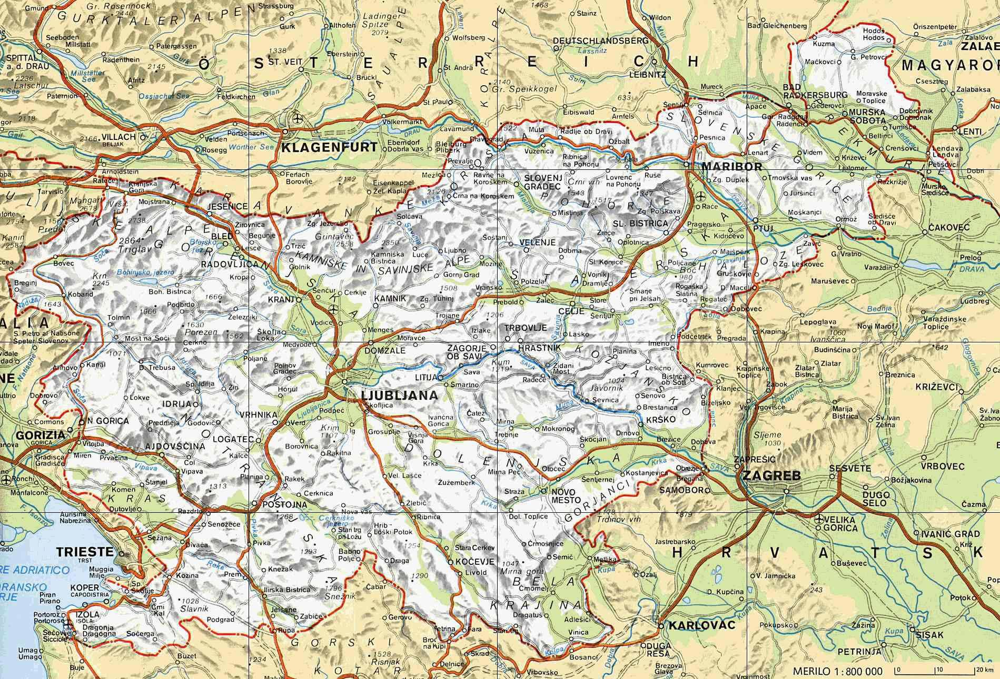
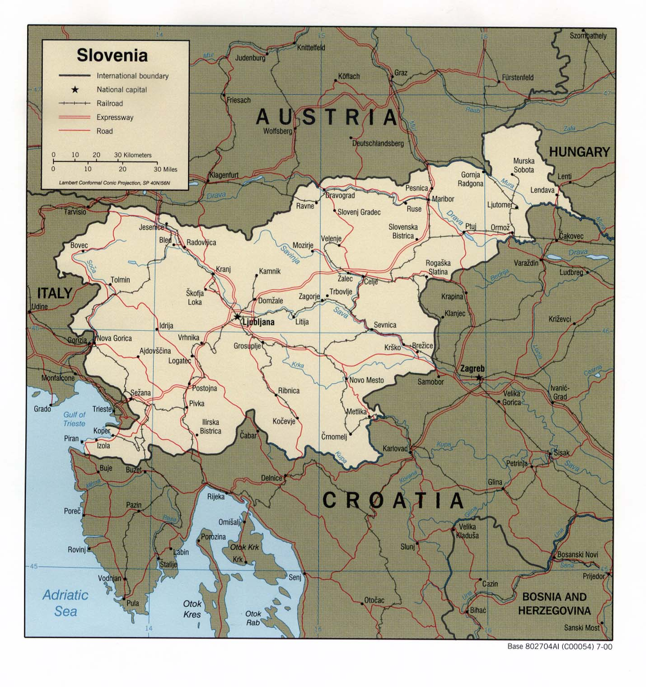
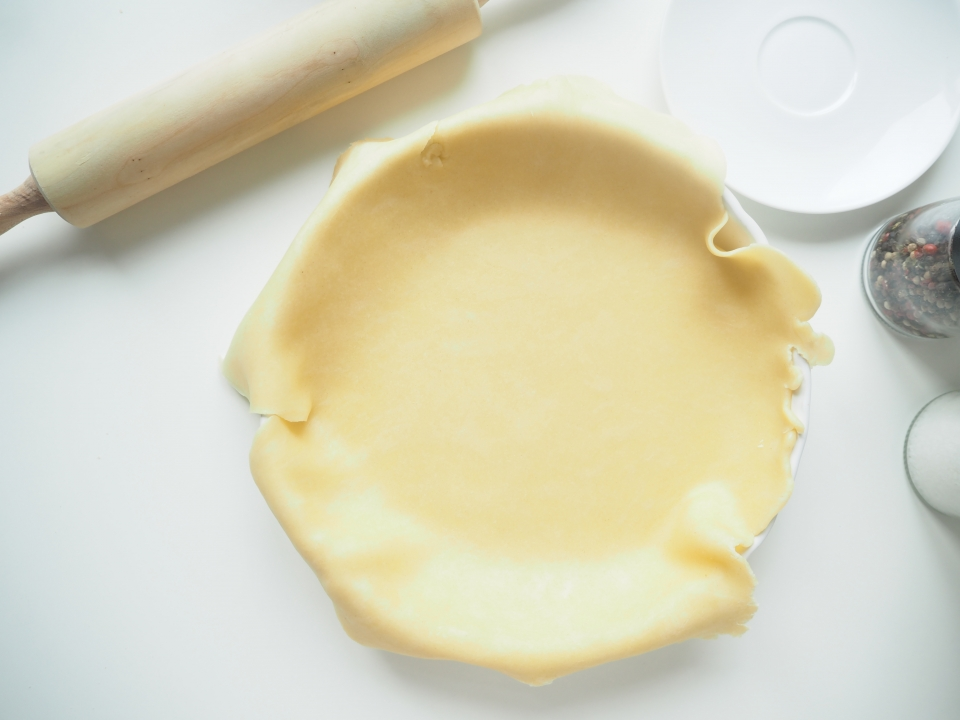
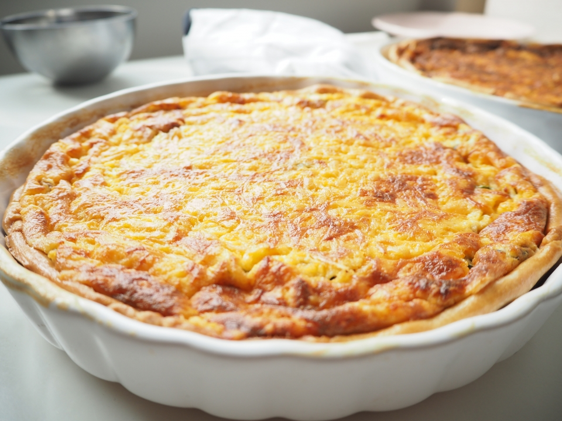

Základní informace
Slovinsko (slovinsky Slovenija), oficiálně Slovinská republika (slovinsky Republika Slovenija; výslovnost: [reˈpublika sloˈveːnija]), je středoevropský stát. Samostatné Slovinsko vzniklo roku 1991
jako první z nástupnických států Jugoslávie. Slovinsko je členem OBSE (od 24. 3. 1992), OSN (od 22. 5. 1992), Rady Evropy (od 14. 5. 1993), WTO (od 30. 7. 1995), EHP, NATO (od 29. 3. 2004),
EU (od 1. 5. 2004), Eurozóny (od 1. 1. 2007), Evropské celní unie a Schengenského prostoru (od 21. 12. 2007) a OECD (od 21. 7. 2010). Jeho sousedy jsou Rakousko, Maďarsko, Chorvatsko a Itálie.


Obyvatelstvo
V roce 1857 žilo na území dnešního Slovinska 1 101 854 obyvatel a od té doby v zásadě jejich počet až do současnosti stoupal. Výjimkou bylo období po první světové válce: jestliže v roce 1910
žilo na území dnešního Slovinska 1 321 098, v roce 1921 již jen 1 054 919. Po roce 1921 počet obyvatel opět narůstal. Ačkoliv v letech 1961 až 1991 absolutní počet Slovinců rostl, jejich
procentuální podíl s rostoucím zastoupením Srbů a Chorvatů klesal.
Většinu z přibližně dvou milionů obyvatel Slovinska tvoří Slovinci (83 %), následují Srbové (1,98 %) a Chorvaté (1,81 %).
Stručná historie
Slovinsko se nachází na území několika menších historických zemí, jeho jádrem je někdejší Kraňsko. Po zániku Rakousko-Uherska se jihoslovanské země postupně zformovaly v jugoslávské království. Za
druhé světové války bylo území Slovinska rozděleno mezi Itálii, Německo a Uhersko. V listopadu 1943 se Antifašistická rada národního osvobození Jugoslávie usnesla o obnovení Jugoslávie na federálním
základě. Jednou z federálních jednotek se mělo stát i Slovinsko. Za datum vzniku Slovinské republiky je považován 19. únor 1944, kdy byl v Črnomelju Slovinský národněosvobozenecký výbor přeměněn
v Slovinskou národněosvobozeneckou radu, v zásadě první slovinský parlament.
Nezávislost na Jugoslávii vyhlásilo Slovinsko 25. června 1991. Na základě Brionské deklarace byla účinnost aktu vyhlášení nezávislosti na tři měsíce pozastavena. 2. října 1991 potvrdilo společné zasedání
všech komor Skupščiny úmysl nabýt nezávislost okamžitě, jakmile uplyne tříměsíční moratorium smluvené Brionskou deklarací. Moratorium vypršelo 8. října 1991, kdy Slovinsko definitivně získalo svou
nezávislost na Jugoslávii.
Co budete potřebovat
Na těsto:
180 g hladké mouky
80 g másla (trochu změklého)
cca 2 lžíce studené vody
zarovnaná lžička soli
Na náplň:
20 dkg anglické slaniny na plátky
150 g sýru cheddar
60 g baby špenátu (cca polovina vaničky)
1 větší cibule
4 vejce
300 ml smetany ke šlehání 31%
sůl a pepř
kulatá forma s průměrem cca 24 cm
potravinová fólie a alobal
luštěnina na zatížení těsta (rýže, čočka, fazole..)
vejce na potření těsta
Postup:
Do misky jsem nasypala mouku, sůl a přidala na menší kousky nakrájený máslo. Z těhle ingrediencí jsem vypracovala drobenku. Do drobenky jsem pak přidala dvě lžíce vody a zpracovávala jsem dál. Vzniknout musí hladký těsto, který nelepí. Pokud se bude těsto drolit, přidávejte vodu. Pokud bude lepit, přidejte mouku. Těsto jsem pak zabalila do potravinový fólie a nechala v lednici cca 30 minut odležet. Mezitím jsem si předehřála troubu na 190°C a připravila si formu na koláč. Po třiceti minutách jsem těsto vyndala z lednice, nechala ho trošku povolit a pak jsem ho vyválela do cca 2-3 mm placku – můžeme si pomoct pečícím papírem nebo potravinovou fólií, kdy těsto umístíme mezi dva kusy a vyválíme ho.
Vyválený těsto jsem přenesla do formy a prstama jsem ho natlačila na stěny formy tak, aby všude trošku vykukovalo nad okraj (teplem v troubě pak totiž sleze dolů, tak aby se tam pak vešla náplň). Pak jsem těsto na dně propíchala na několika místech vidličkou, přikryla jsem ho alobalem a na alobal jsem nasypala čočku (použít můžete jakoukoliv luštěninu – propíchnutí těsta vidličkou a zatížení zábrání nafukování těsta při pečení). Takhle připravený těsto jsem pekla v předehřátý troubě 15 minut. Po patnácti minutách jsem sundala alobal s čočkou, těsto jsem potřela rozšlehaným vajíčkem a dala ho ještě bez alobalu na tři až pět minut péct, aby těsto mělo krásnou zlatou barvu.
Během pečení těsta jsem si připravila náplň. Do misky jsem rozklepla vejce, přilila jsem smetanu, přidala jsem sůl (s tou opatrně-slanina a sýr jsou slaný dost), pepř a přisypala jsem polovinu nastrouhanýho sýra. Pak jsem si nakrájela cibuli na půl kolečka, slaninu na kostičky a na pánvi jsem všechno osmažila dozlatova. Na závěr jsem přimíchala špenát a ve chvíli, kdy změknul, jsem pánev sundala z plotny. Směs jsem nechala trochu vychladnout a pak jsem ji přidala do vajec se smetanou. Promíchala jsem, ochutnala, jestli je směs dostatečně slaná a pak jsem ji nalila na předpečený těsto. Všechno jsem zasypala druhou polovinou nastrouhanýho cheddaru a dala do trouby. Quiche jsem pekla cca 30 minut na 180°C (já peču na horký vzduch – zařiďte se ale podle vaší trouby). Náplň se bude během pečení nafukovat a ve výsledku by měla mít krásnou zlatavou barvu. Mně třeba horký vzduch nepeče uplně rovnoměrně a musela jsem během pečení asi dvakrát koláč otáčet, aby na jedný straně něbyl černej a na druhý syrovej. Hotovej quiche poznáte tak, že když s ním zatřesete, tak po krajích je tuhej a uprostřed se ještě trošku třese.
Quiche nechte uplně vychladnout a teprve pak ho krájejte. Hned z trouby by vám nedržel pohromadě a náplň by se roztekla♥
Tak šup do kuchyně!

